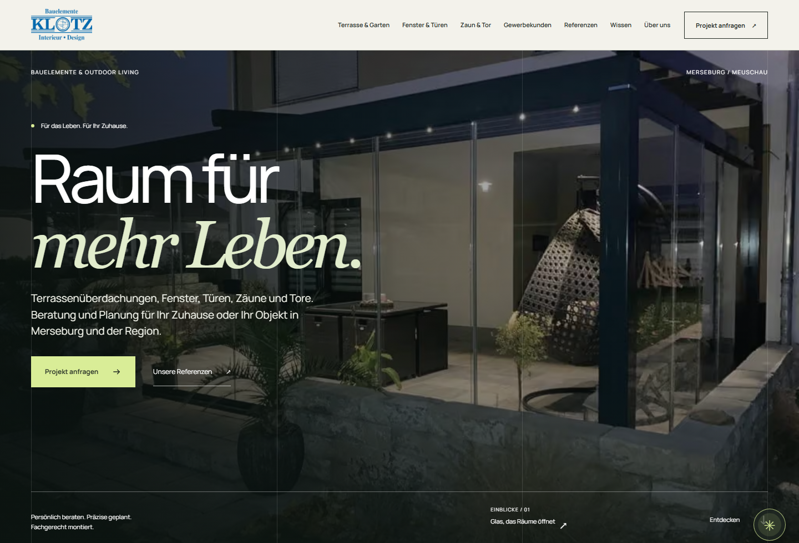

Webrelaunch & digitale Wachstumsbasis
Zwei eigenständige Marken. Eine belastbare technische Grundlage. Zwei Websites, die konsequent auf messbare Anfragen ausgerichtet sind.
Nicht nur ein neues Erscheinungsbild
KLOTZ benötigt eine leistungsfähige digitale Vertriebsbasis für Privat-, Gewerbe- und Wohnungswirtschaftskunden. Das Kaffeehaus Meuschau wird parallel als eigenständige Eventlocation positioniert.
Technisches SEO, Local SEO, klare Leistungsarchitektur und maschinenlesbare Inhalte schaffen die Grundlage für klassische und KI-gestützte Suche.
Besucher erkennen Angebot, Qualität, Region und nächsten Schritt innerhalb weniger Sekunden – besonders auf dem Smartphone.
Leistungsbezogene Formulare, klare CTA und Conversion-Tracking machen aus Reichweite nachvollziehbare Geschäftschancen.
Gemeinsame Qualität, getrennte Markenführung
Architektonisch, präzise, hochwertig und beratungsstark.
Eigene Navigation, Bildwelt, Tonalität, Seitentypen, Formulare und Conversion-Ziele.
Warm, emotional, gastfreundlich und anlassbezogen.
Eigene Navigation, Bildwelt, Inhalte, Eventlogik, Formulare und Conversion-Ziele.
Kapazitäten, Ausstattung, Parkplätze, Barrierefreiheit, Technik, Catering, Getränkeregeln, Preise und Stornobedingungen werden erst nach Bestätigung veröffentlicht. So vermeiden wir falsche Angaben.
SEO-Ausgangslage Kaffeehaus: Sofern bislang keine eigenständige indexierbare Website besteht, ist das Migrationsrisiko gering. Entscheidend sind ein sauberer technischer Start, konsistente Unternehmensdaten und ein gepflegtes Google-Unternehmensprofil.
Vom Konzept bereits in die sichtbare Form
Die Richtung verbindet vorhandene Markenwerte mit einer deutlich klareren, moderneren und conversionorientierten Nutzerführung.
90+
Lighthouse Performance als Zielwert für repräsentative mobile Schlüsselseiten – bei freigegebenem Inhalt und kontrollierten Drittskripten.
Optimierte Bilder, wenig Client-JavaScript, Caching und schnelle globale Auslieferung.
Semantik, Kontraste, Tastaturbedienung, sichtbare Fokuszustände und WCAG-orientierte Tests.
Formularabschlüsse, Telefon-/E-Mail-Klicks, Einstiegsseiten, UTM und organische Sichtbarkeit.
Hinweis: Die Abbildung zeigt den aktuellen Präsentationsstand. Inhalte, Funktionen und Bildrechte werden vor einer Veröffentlichung gemeinsam final geprüft.
Offen, dokumentiert, übertragbar
Performanceorientiert und ohne proprietäre Plattformbindung – auf verbreiteten Webstandards, mit sauberer Trennung von Oberfläche, Inhalt und Daten.
Das Git-Repository und sämtliche projektbezogenen Zugänge werden vollständig übergeben.
Die Datenbank ist als Standard-PostgreSQL-Dump exportierbar; Inhalte und Medien können übertragen werden.
Technische Dokumentation und Standardtechnologien ermöglichen einem qualifizierten Entwickler Deployment und Weiterentwicklung.
WordPress ist für viele Websites eine bewährte und wirtschaftliche Lösung. Für dieses Projekt empfehlen wir Next.js, weil die Kombination aus zwei eigenständigen Marken, strukturierten Referenzen, individueller Anfrage- und Redaktionslogik sowie späterer Automatisierung von einer maßgeschneiderten Architektur profitiert. Entscheidend ist nicht das Etikett des Systems, sondern die passende Umsetzung, Dokumentation und Übergabefähigkeit.
Sichtbarkeit ist ein System
Schema.org/JSON-LD wird aus den redaktionell gepflegten, sichtbaren Informationen erzeugt und mit geeigneten Validatoren geprüft. Nicht bestätigte Daten werden weder veröffentlicht noch in strukturierte Daten aufgenommen.
Consent-konformes Tracking von Formularen, Telefon-/E-Mail-Klicks, Kampagnen und Einstiegsseiten.
Impressionen, Klicks, Suchanfragen, Seitenstatus und technische Auffälligkeiten.
Übersichtliche Monatsauswertung mit Leads, Quellen, Entwicklung und Handlungsempfehlungen.
Realistische Planung
Der Zeitrahmen beginnt nach Beauftragung, Kick-off und rechtzeitiger Bereitstellung der benötigten Zugänge, Inhalte und Freigaben.
Woche 1–2
Ziele, Zielgruppen, Bestand, URL-Inventar,
SEO-Baseline, Anforderungen und Scope.
Woche 3–5
Sitemaps, Nutzerwege, Wireframes, Contentmodell und
Messkonzept.
Woche 5–12
Zwei Designsysteme, Templates, Redaktionssystem,
Formulare und Tracking.
Woche 12–16
Inhalte, Redirects, QA, Schulung, Abnahme und
kontrollierter Launch.
Transparente Ersteinschätzung
| Leistungsblock | Budget netto |
|---|---|
| Strategie, Konzeption, SEO- und Bestandsanalyse | 1.200–1.500 € |
| Relaunch KLOTZ.mobi | 4.000–5.000 € |
| Entwicklung Website Kaffeehaus Meuschau | 2.000–2.600 € |
| UX/UI und zwei eigenständige Designsysteme | 2.300–2.900 € |
| Redaktionssystem und technische Entwicklung | 2.800–3.500 € |
| SEO, Local SEO, GEO/AIO und strukturierte Daten | 1.100–1.400 € |
| Migration bestehender Inhalte, Medien und URLs | 1.000–1.300 € |
| Analytics, Search Console und Conversion-Tracking | 600–800 € |
| Gesamtbudget | 15.000–19.000 € |
Der Korridor enthält bereits eine einmalige Reduktion von rund 30 % gegenüber unserer kalkulierten regulären Projektleistung. Grundlage sind der strategische Referenzwert des Projekts und die effiziente gemeinsame technische Basis – nicht eine Kürzung der vereinbarten Qualität.
Bei gemeinsamer Beauftragung beider Websites: Anlass, Wunschtermin, Personenzahl, Raum-/Leistungswünsche und Kontaktdaten als strukturierte qualifizierte Anfrage – ohne Aufpreis.
Nicht Teil des Bonus: verbindliche Echtzeitbuchung, Live-Verfügbarkeiten, Kalender-Synchronisation, Zahlungsabwicklung, dynamische Preisberechnung oder automatische Vertragsbestätigung. Diese „Stufe 2“ wird nach fachlicher Spezifikation separat angeboten.
Alle Preise netto zzgl. gesetzlicher Umsatzsteuer. Zahlungsplanvorschlag: 30 % Projektstart · 30 % Designfreigabe · 30 % abnahmefähige Umsetzung · 10 % Go-live/Übergabe.
Vier Jahre klar kalkuliert
Wir empfehlen, Hosting- und Datenbankkonten direkt auf KLOTZ anzulegen. Dadurch bleiben Abrechnung, Zugänge und Anbieterwechsel unter Kontrolle des Auftraggebers.
| Position | Zeitraum / Hinweis | Netto |
|---|---|---|
| Hostinger Unlimited-Plan | 48 Monate im Voraus; aktueller Warenkorbpreis vom 28.09.2026 | 191,52 € |
| Technische Betreuung | 120 € / Monat × 48 Monate | 5.760,00 € |
| Fix kalkulierbare Kosten 48 Monate | ohne variable Drittanbieter | 5.951,52 € |
Hostinger-Warenkorb: 227,91 € brutto inkl. 36,39 € MwSt. Der Anbieter nennt aktuell 16,99 € / Monat als Verlängerungspreis nach 48 Monaten. Anbieterpreise und Verlängerungskonditionen können sich bis zur Buchung bzw. Verlängerung ändern.
Supportzeit: Mo–Fr, 09:00–17:00 Uhr, ausgenommen gesetzliche Feiertage in Sachsen-Anhalt. Die Zeiten bezeichnen die Erstreaktion, nicht zwingend die vollständige Behebung. Neue Funktionen, redaktionelle Arbeiten und umfangreiche Änderungen sind nicht enthalten und werden erst nach Freigabe mit 60 € / Stunde berechnet.
Diese Dienste werden erst nach tatsächlichem Bedarf ausgewählt und direkt auf KLOTZ abgerechnet. Damit entstehen keine verdeckten SaaleWeb-Aufschläge.
Entscheidungsrelevante Punkte
Next.js + maßgeschneidertes, dokumentiertes Redaktionssystem; TypeScript, Prisma und PostgreSQL. Nutzungsrechte und Übergabe erfolgen nach vollständiger Bezahlung wie auf Seite 5 beschrieben.
Keine proprietäre CMS-Lizenz. Hostinger 191,52 € netto für 48 Monate im Voraus, Betreuung 120 € netto/Monat. PostgreSQL und optionale Drittanbieter separat nach tatsächlicher Nutzung; Details Seite 9.
Übergabe von Git-Repository, Zugängen, Dokumentation, Medien-/Content-Export und Standard-PostgreSQL-Dump. Ein qualifizierter Next.js-Entwickler kann das System neu bereitstellen und fortführen.
Relevante Arbeitsproben aus regionalem Bau/Handwerk, Gastronomie/Erlebnis und eigener SaaleWeb-Entwicklung zeigen wir im persönlichen Termin einschließlich unseres konkreten Leistungsumfangs.
Vollständiges URL-Inventar, SEO-Baseline, Redirect-Matrix, Staging-Prüfung, Canonical-/Sitemap-Kontrolle sowie 30 Tage Monitoring nach Go-live. Rankings können nicht garantiert, Risiken aber systematisch reduziert werden.
Mobile-first, Lighthouse/Core-Web-Vitals-Checks, Playwright/axe, Tastaturtests und semantisches HTML. Consent-first-Einbindung externer Dienste; AV-Verträge und Rechtstexte werden mit KLOTZ bzw. Rechtsberatung abgestimmt.
JSON-LD nur passend zu sichtbaren Inhalten, u. a. Organization/LocalBusiness, Breadcrumb, Service, Article, FAQ und Event; technische Validierung. Keine unseriösen Garantien für AI Overviews oder Antwortsysteme.
Professionelle Foto-/Videoproduktion, Rechtsberatung, komplette Texterstellung ohne Ausgangsmaterial, kostenpflichtige Drittanbieter, komplexe Fremdsystemintegrationen und Eventplaner Stufe 2 – sofern nicht schriftlich ergänzt.
Zwei gebündelte Korrekturrunden je Hauptphase. Danach gemeinsame Abnahme anhand des vereinbarten Scopes; Änderungswünsche außerhalb des Scopes nur nach transparenter Freigabe.
30 Tage Stabilisierungsphase für projektbedingte Fehler. Anschließend optional 120 € netto/Monat gemäß Seite 9: Erstreaktion bis zum nächsten Arbeitstag, bei vollständigem Ausfall innerhalb von 4 Supportstunden. Weiterentwicklung 60 € netto/Stunde bzw. 480 € netto/Tag nach Beauftragung.
Vom Budgetkorridor zum verbindlichen Angebot
In 60–90 Minuten priorisieren wir Seiten, Inhalte, Migration, Redaktionsrollen, Messziele, Kaffeehaus-Daten und den gewünschten Funktionsumfang.
Bestand, Ziele, Inhalte, Verantwortlichkeiten, Integrationen und offene Punkte.
Seitentypen, Mengen, Korrekturrunden, Termine, Abnahmekriterien und Betriebskosten.
Verbindlicher Festpreis, Zahlungsplan und Projektplan auf Basis des bestätigten Scopes.
Ansprechpartner
SaaleWeb
hallo@saaleweb.de
saaleweb.de
Vorgesehene Referenzgespräche
SorgfaltBau Halle · Bau / regionales Handwerk
Neue Liebe ·
Gastronomie / Erlebnis
SaaleWeb · digitale Plattform und
Automatisierung
Konkreter Leistungsumfang und Veröffentlichungsstatus werden im Termin transparent erläutert.
Diese Unterlage ist eine unverbindliche Ersteinschätzung und kein Vertrag. Verbindlich werden Leistungsumfang, Preis, Zeitplan, Rechte und Betrieb erst durch das nach dem Scoping erstellte und beidseitig bestätigte Angebot.